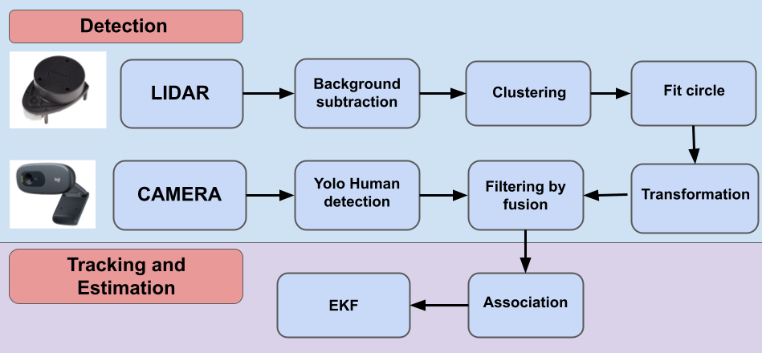
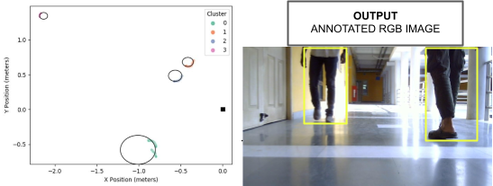

Real-Time Human Tracking with Lidar and Camera Fusion
Problem
Autonomous mobile robots are increasingly deployed in human-centric environments—such as warehouses, hotels, and offices—for applications like material handling, customer interaction, and surveillance. However, effective real-time human tracking in these dynamic settings remains a challenge. Existing solutions often rely on high-cost, sophisticated sensors that increase system complexity and cost, limiting large-scale deployment in practical settings. The goal is to develop a cost-effective tracking solution that enables robots to reliably detect and track humans in real-time, even in cluttered environments with occlusions.
Solution
This study introduces a low-cost, multi-sensor fusion approach that combines a 2D LiDAR and monocular camera for human tracking and position estimation. Key components of the solution include:
Detection
The LiDAR detects human legs within a 4-meter range(after background subtraction), using a combination of density-based clustering and least-squares based circle fitting. Clustering is performed to group points which are proximate to each other and these clusters are then fit into a circle using least squares. If the curvature of the circle is within a set threshold the cluster is considered a detection of a human leg. As this is a geometry based method, shapes which are similar to a human leg are falsely detected. Yolo-v4 based camera detection has been shown to give quite accurate detections of humans but the detections are with respect to the image. Therefore we leverage the accuracy of the Yolo model to remove false detections from the lidar detections.
Data Fusion and Calibration
The camera and LiDAR data are calibrated and synchronized, with extrinsic and intrinsic calibration aligning the sensors frames. Aligning the frames allows us to project lidar detections onto the image frame to remove false positives. ROS-based time synchronization ensures data from both sensors are processed in real-time, within a 0.6-second threshold, enabling precise temporal alignment.
Extended Kalman Filter (EKF) for Continuous Tracking:
An EKF processes the combined data to track individuals across frames, using a constant linear and angular velocity motion model to remove noise and also to predict human trajectories Predictions are possible even when direct measurements are temporarily unavailable. This predictive capability allows the system to handle occlusions and maintain accurate tracking, even in crowded environments.
For further details, you can read my paper: